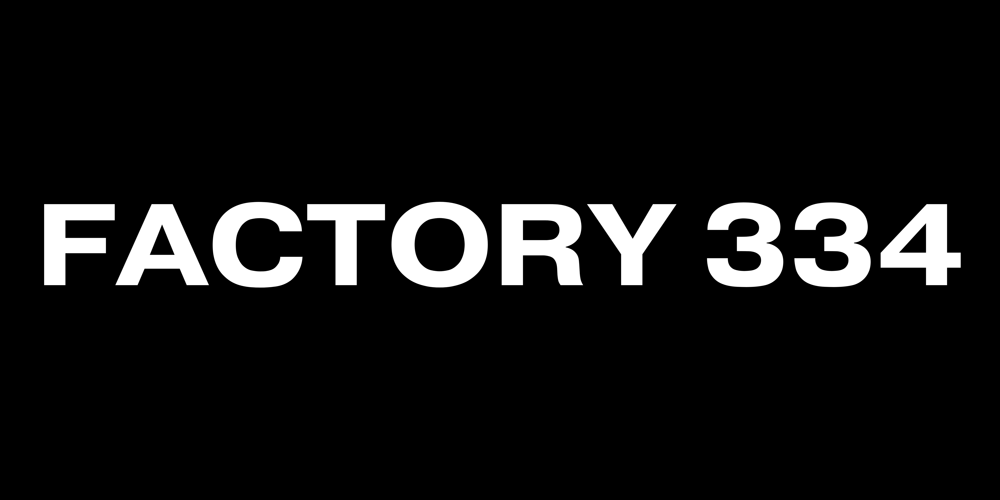

Research. Design. Engineering.
Building high-utility digital products
2022 - 2026
Factory 334 was a software design consultancy operated by Perry Asibey-Bonsu.
It provided web and mobile engineering, high-fidelity prototyping, and early-stage product strategy services.